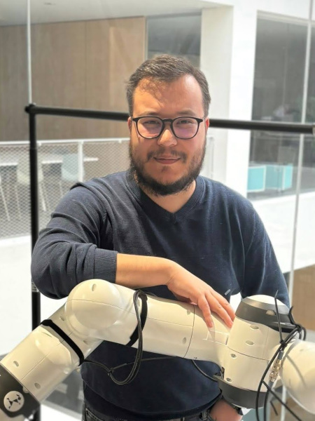

MLMaximilian Xiling Li
PhD Researcher · Intuitive Robots Lab
Karlsruhe Institute of Technology
PhD researcher at the Intuitive Robots Lab, Karlsruhe Institute of Technology, advised by Rudolf Lioutikov. I work on concept-aware robot policies: making manipulation more robust by grounding learned policies in high-level concepts like visual affordances and force awareness, an idea rooted in my interest in explainable AI.
My research asks how robots can extract richer information from available data rather than simply requiring more of it. Starting from an interest in explainable AI, making the decisions of learned models transparent and interpretable, I arrived at the idea that grounding policies in human-understandable concepts can also make them more robust. Under the theme of Concept-Aware Robot Policies (CARP), I investigate how underutilized concepts such as visual affordances, and force-aware action representations, can be integrated into learned policies to improve manipulation performance.
Max studied Computer Science at TU Darmstadt, during which he also worked as a research working student at SAP in Big Data Intelligence and Research (2013–2017). During his bachelor's he was an exchange student at Tongji University in Shanghai. He continued at KIT for his master's, working as a research assistant at the Human-Centered Systems Lab and the Autonomous Learning Robots Lab, before joining the Intuitive Robots Lab as a PhD researcher in 2022.